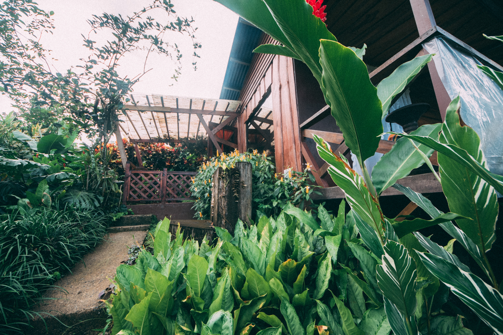
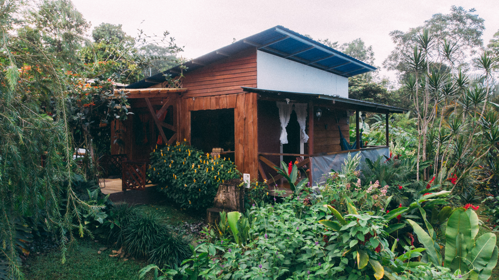
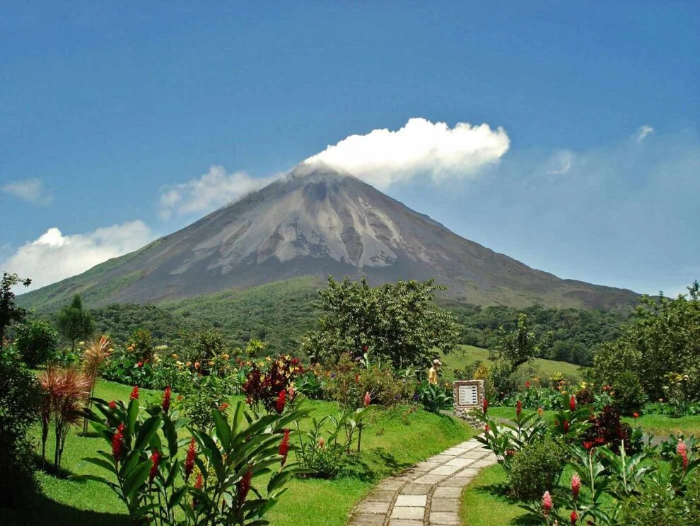
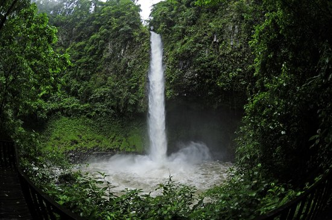
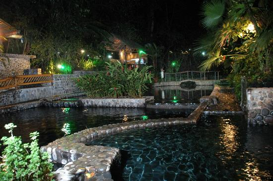
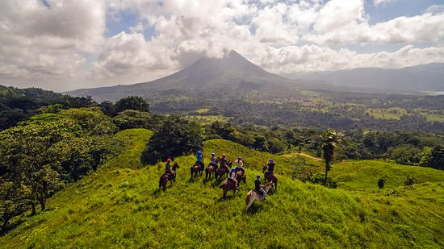

Información general
Todo lo que ocupas saber sobre "Luke House Casa Tranquila"
correo gmail
Para mas información ingrese a estos links:
Airbnb
instagram
Disfruta una estancia única; patio de 1 acre visitado por perezosos, tucanes, ranas, colibríes, polinizadores, etc. En las tardes y mañanas talvez escuches monos aulladores.
Si caminas un poco, es posible que veas perezosos y algunos animales silvestres, ¡nunca alimentes a ninguno!
La casa es ideal para compartir, pasear, hacer ejercicio, leer, pintar, acampar en verano ya que cuenta con amplio terreno y darte unos días de descanso en este espacio rural.
Necesitas 30 minutos para ir a Fortuna.
El espacio
Búscate un entorno tranquilo donde puedas conectarte con la naturaleza; ver cultivos y obtener la tranquilidad que solo ofrece el campo. El clima húmedo, cálido y tropical nos regala lluvia a cualquier hora. Si va a caminar se recomienda traer repelente de insectos, zapatos para caminar y poncho para la lluvia, bloqueador solar y un sombrero. La habitación tiene un aire acondicionado portátil, para que puedan descansar durante las noches húmedas.
"Dentro de 20 años estarás más decepcionado por las cosas que no hiciste que por las que hiciste. Así que suelta amarras, navega lejos de puertos seguros, coge los vientos alisios. Explora". Sueña. Descubre
-Mark Twain
Acceso de los huéspedes
Puede caminar libremente por toda la propiedad, las personas que viven cerca de la casa son mi familia, quienes estarán felices de recibirlos como vecinos si alguna vez se ven.
Otros aspectos a destacar
Se trata de una casa de madera, montañas cercanas lo que nos permite tener de cerca maravillosos animales: tejones, perezosos, monos, insectos y pájaros de colores, reptiles, etc.
IMPORTANTE:
- 700 meters from paved road, the main highway (702 route)
- 850 meters to super market
- 1.3 km to La Lucha gas station
- 20.5 km to La Fortuna downtown
- 25.1 km to Ciudad Quesada bussiness city (in the other direction than Fortuna)
Imagenes de el lugar:



Enlistado de Lugares recomendados visitar en tu viaje a Costa Rica:
- Parque Nacional Volcan Arenal
- Catarata la Fortuna
- Aguas termales-Las aguas termales
- Pueblo de la fortuna
- Puentes colgantes mistico park
- Rafting en el Rio Balsa
- Rio Celeste
- Tesoros ocultos Río Chato
Por siguiente se va a pasar a dar más detalles de los lugares y otra información importante.
En la zona de la Fortuna hay varias zonas turísticas como por ejemplo; Parque Nacional Volcán Arenal, Catarata La Fortuna, Aguas Termales – Las Aguas Termales de La Fortuna, Visita obligatoria al Pueblo de La Fortuna, Puentes colgantes del Místico Park – Una Maravilla Natural, Rafting en el Río Balsa, Rio Celeste. Otras atracciones que se encuentran son los miradores como: Tesoros Ocultos de Cerro Chato.
1.Parque Nacional Volcán Arenal
Ubicado a 140 kilómetros de San José (4 horas de trayecto en coche) y conocido por ser, junto al Volcán Poás y el Volcán Irazú, uno de los volcanes más importantes de Costa Rica; el volcán Arenal tiene 1633 metros de altura y 7500 años de antigüedad. Otra de las características es que pese a ser uno de los volcanes más activos del país, tiene una historia eruptiva menos frecuente que los anteriores, aunque probablemente la última, ocurrida en el año 1968, es la más recordada en Costa Rica.

2.Catarata la Fortuna
Es un espacio natural gestionado de manera sostenible por la Asociación de Desarrollo Integral de La Fortuna (ADIFORT), una organización sin fines de lucro fundada desde el 31 de agosto de 1969, que tiene como principal objetivo velar por el bienestar y crecimiento de la comunidad de La Fortuna mediante la ejecución de obras en materia de educación, infraestructura vial, ambiente, promoción del deporte y la cultura, embellecimiento de la comunidad y fortalecimiento de la seguridad ciudadana; proyectos que son posible ejecutar gracias a los fondos recaudados con la visita de cada turista a este espacio natural.
La Catarata Río Fortuna se ubica en una reserva biológica con un área de 210 hectáreas, de bosque tropical húmedo premontano de transición, forma parte del Parque Nacional Volcán Arenal y se ubica a 520 metros sobre el nivel del mar, en donde surgen las nacientes de nuestras montañas y las aguas del río Fortuna. Dentro de este sector se encuentra el Cerro de los Perdidos, las Placas de Mayo y el Cerro Chato, los cuales se sustentan sobre bases rocosas de gran valor geológico, originando a su vez una exuberante vegetación y belleza escénica.

3.Aguas termales-Las aguas termales
Las aguas termales en la Fortuna son una de las atraciones principales de la zona hay esta baldi, kalambu, relax termalitas, ecotermales, tabacon, entre otras.

4.Pueblo de la Fortuna "Parada obligatória
En esta zona de la Fortuna se puede encontar distintos restaurantes y hoteles por ejemplo; pizza ranch, Rain Forest, entre otros lugares qeu se encuentra en el mismo por lo que las visitas en esta area son muy frecuentes en casi todo el año principalmete en la temporada alta de el turismo, por lo qeu los qeu trabajan en esto salen muy beneficiados en la parte de los sueldos o pagos.
5.Puentes Colgantes Mistico Park
Disfrute del bosque cómodamente en un recorrido revitalizante y lleno de naturaleza en nuestros senderos. Frente al majestuoso Volcán Arenal podrá admirar su belleza y la del maravilloso bosque que le rodea. Una reserva poblada de especies silvestres en su hábitat natural que le permitirá a usted un reencuentro con las raíces propias de la especie humana. Contamos con amplio parqueo, restaurante, servicios sanitarios, wifi gratuito, tienda de recuerdos y también servicio de transporte al pueblo de La Fortuna y hoteles cercanos.

6.Rafting en el Rio Balsa
Su aventura comienza con transporte desde su hotel y un viaje de aproximadamente 45 minutos hasta el imponente río Balsa. Si bien el WiFi del transporte puede tentarlo a revisar su teléfono, probablemente se sentirá más atraído por el campo verde que pasa por su vista, al ras del follaje tropical que debería recordarle por qué vino a Costa Rica.
7.Rio Celeste
Ubicado en la Cordillera Volcánica de Guanacaste y con 1916 metros de altitud, el volcán Tenorio, que tiene cuatro conos, es el corazón de este parque nacional que se conoce, entre otras cosas, por ser una de las maravillas naturales del país.
Tesoros ocultos Cerro Chato
Este es uno de los cuantos miradores que se encuentran en la zona de la Fortuna por lo que esta parada vale mucho la pena si te interesa ver la naturaleza y escencia de todo el lugar, se recomienda llevar repelente para mosquitos, sombrilla por si llueve, poncho, una botella de agua para la caminata de subida y bajada de el mirador. Los precios de la entrada se pueden encontrar en la pagina de Get Your Guide.
Get Your Guide
Política y privacidad de la página
....
....
....